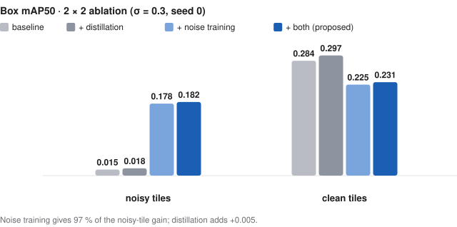

Noise-robust object detection via heterogeneous relational KD
위성 센서 노이즈 속에서도 가벼운 검출기가 동작하게 하는 연구입니다. 배포 모델은 그대로 두고 학습만 바꿨습니다.
Keep a lightweight detector working under satellite sensor noise. DINOv2 (ViT) → YOLOv8s-seg (CNN) distance-wise relational distillation, plus 50:50 mixed-noise training; teacher and adapter are removed at inference, so the deployed model is unchanged (11.8M parameters / 22 MB).
What I tried 시도한 것
The target is a detector small enough for an on-board computer that still works when the image is noisy. The obvious route — distil a large, robust vision transformer into a small CNN — took four attempts.
The four attempts
| attempt | idea | what happened | why it fell short |
|---|---|---|---|
| 1 · Feature-matching KD | 1×1 adapter, MSE between DINOv2 and YOLO features (small COCO subset) | mAP below the plain detector | adapter too shallow; no detection loss in the objective |
| 2 · Adapter v1 → v9 | residual adapter with GroupNorm, GELU, coordinate attention; MSE + RKD + cosine; PCGrad against gradient clash (COCO 40k) | clean mAP50 0.5423 → 0.5616, but at σ = 0.3 0.4171 → 0.4058 | the distilled backbone fell faster under noise — clean-image knowledge did not transfer to noisy inputs |
| 3 · Clean teacher, noisy student | teacher sees the clean tile, student the noisy one; align their statistics on iSAID | loss converged; no measured robustness gain | matching statistics of noisy features did not make detection robust |
| 4 · RKD + mixed-noise training (final) | distance-wise relational KD plus 50:50 clean/noisy training; teacher and adapter removed at inference | noisy mAP50 +0.163 at the same 22 MB model | — |
Results 결과

Table
| model | noisy | clean |
|---|---|---|
| Baseline (clean-only) | 0.015 | 0.284 |
| + distillation only | 0.018 | 0.297 |
| + noise training | 0.178 | 0.225 |
| + distillation (proposed) | 0.182 | 0.231 |

What the 2 × 2 ablation says 2×2 분해
Noise training gives 97 % of the gain (+0.163 noisy mAP50); distillation adds a small, consistent +0.005. Robustness costs about 0.06 on clean tiles.
Details
Running all four combinations (with / without distillation × with / without noise training) separated the two effects. Noise training alone gives +0.163 noisy mAP50 — 97% of the gain; distillation adds +0.005, small but positive in all four comparisons. The two barely interact. Robustness is not free: clean mAP50 drops by about 0.06.
Implementation 구현
Implementation (sole author of the ML code): RKD loss, custom Ultralytics trainer (SPPF hook, adapter, mixed noise), three framework-level bug fixes.